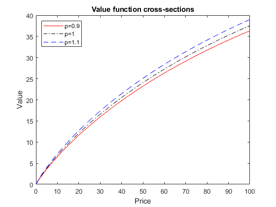
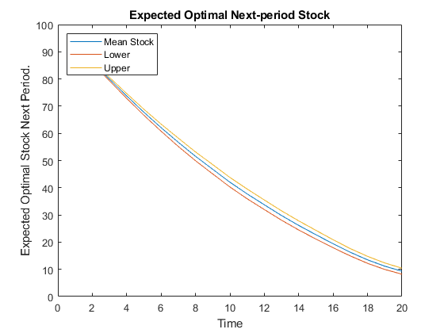
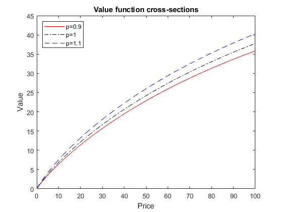
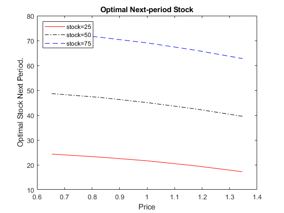

Contents
Question 2
[prob,grid]=tauchen(21,0.5,0.5,0.1);
Question 3,4
delta=0.95; S=1000; P=repmat(grid,S,1); pi=prob;
stock=linspace(0,100,S); S1=repmat(stock',1,length(grid));
v_init=zeros(S,length(grid));d_init=ones(S,length(grid));
v_revised=ones(S,length(grid));d_revised=ones(S,length(grid));
diff=1;
while diff>0.001
Ev=v_init*pi';
for i=1:S
U=u(P,stock(i)-S1);
[v_revised(i,:),d_revised(i,:)]=max(U+delta*Ev);
end
diff=norm(v_revised-v_init)/norm(v_revised);
disp(['Change in value function:',num2str(diff)]);
v_init=v_revised;
end
policy=stock(d_revised);
figure(1)
plot(stock,v_init(:,8),'r-',stock,v_init(:,11),'k-.',stock,v_init(:,14),'b--');
legend({'p=0.9','p=1','p=1.1'},'Location','northwest');
title('Value function cross-sections'); xlabel('Price');ylabel('Value');
figure(2)
plot(grid,policy(250,:),'r-',grid,policy(500,:),'k-.',grid,policy(750,:),'b--');
legend({'stock=25','stock=50','stock=75'},'Location','northwest');
title('Optimal Next-period Stock'); xlabel('Price');ylabel('Optimal Stock Next Period.');
Change in value function:1
Change in value function:0.4373
Change in value function:0.27637
Change in value function:0.19863
Change in value function:0.15074
Change in value function:0.1173
Change in value function:0.09206
Change in value function:0.072018
Change in value function:0.05579
Change in value function:0.042803
Change in value function:0.032694
Change in value function:0.024978
Change in value function:0.019118
Change in value function:0.014651
Change in value function:0.011225
Change in value function:0.008583
Change in value function:0.0065373
Change in value function:0.0049511
Change in value function:0.0037222
Change in value function:0.0027731
Change in value function:0.002044
Change in value function:0.0014883
Change in value function:0.0010688
Change in value function:0.00075609

Question 5
rng(1000); sims=50; decision_sim=zeros(sims,20);p_gen=zeros(sims,20);
for k=1:sims
p_gen(k,1)=11;
for i=1:19
draw=mnrnd(1,prob(p_gen(k,i),:));
p_gen(k,i+1)=find(draw==1);
end
decision_sim(k,1)=d_revised(1000,11);
for j=1:19
decision_sim(k,j+1)=d_revised(decision_sim(k,j),p_gen(k,j+1));
end
disp(['Iteration:', num2str(k)]);
end
sim_stock=stock(decision_sim);
sim_stock_mean=mean(sim_stock,1);
sim_stock_se=std(sim_stock,1);
sim_stock_lb=sim_stock_mean-1.645*(sim_stock_se)/sqrt(sims);
sim_stock_ub=sim_stock_mean+1.645*(sim_stock_se)/sqrt(sims);
plot(1:1:20,sim_stock_mean, 1:1:20,sim_stock_lb,1:1:20,sim_stock_ub );
legend({'Mean Stock','Lower','Upper'},'Location','northwest');
title('Expected Optimal Next-period Stock'); xlabel('Time');ylabel('Expected Optimal Stock Next Period.');
Iteration:1
Iteration:2
Iteration:3
Iteration:4
Iteration:5
Iteration:6
Iteration:7
Iteration:8
Iteration:9
Iteration:10
Iteration:11
Iteration:12
Iteration:13
Iteration:14
Iteration:15
Iteration:16
Iteration:17
Iteration:18
Iteration:19
Iteration:20
Iteration:21
Iteration:22
Iteration:23
Iteration:24
Iteration:25
Iteration:26
Iteration:27
Iteration:28
Iteration:29
Iteration:30
Iteration:31
Iteration:32
Iteration:33
Iteration:34
Iteration:35
Iteration:36
Iteration:37
Iteration:38
Iteration:39
Iteration:40
Iteration:41
Iteration:42
Iteration:43
Iteration:44
Iteration:45
Iteration:46
Iteration:47
Iteration:48
Iteration:49
Iteration:50

Question 6
[prob1,grid1]=tauchen(5,0.5,0.5,0.1);
delta=0.95; S=1000; P=repmat(grid1,S,1); pi2=prob1;
stock1=linspace(0,100,S); S1=repmat(stock1',1,length(grid1));
v_init2=zeros(S,length(grid1));d_init2=ones(S,length(grid1));
v_revised2=ones(S,length(grid1));d_revised2=ones(S,length(grid1));
diff2=1;
while diff2>0.001
Ev=v_init2*pi2';
for i=1:S
U=u(P,stock(i)-S1);
[v_revised2(i,:),d_revised2(i,:)]=max(U+delta*Ev);
end
diff2=norm(v_revised2-v_init2)/norm(v_revised2);
disp(['Change in value function:',num2str(diff2)]);
v_init2=v_revised2;
end
policy2=stock1(d_revised2);
figure(3)
plot(stock1,v_init2(:,2),'r-',stock1,v_init2(:,3),'k-.',stock1,v_init2(:,4),'b--');
legend({'p=0.9','p=1','p=1.1'},'Location','northwest');
title('Value function cross-sections');xlabel('Price');ylabel('Value');
figure(4)
plot(grid1,policy2(250,:),'r-',grid1,policy2(500,:),'k-.',grid1,policy2(750,:),'b--');
legend({'stock=25','stock=50','stock=75'},'Location','northwest');
title('Optimal Next-period Stock');xlabel('Price');ylabel('Optimal Stock Next Period.');
Change in value function:1
Change in value function:0.42575
Change in value function:0.26805
Change in value function:0.1934
Change in value function:0.14735
Change in value function:0.11493
Change in value function:0.090315
Change in value function:0.070787
Change in value function:0.055033
Change in value function:0.042436
Change in value function:0.032584
Change in value function:0.025013
Change in value function:0.019227
Change in value function:0.014795
Change in value function:0.011382
Change in value function:0.0087422
Change in value function:0.0066924
Change in value function:0.0050985
Change in value function:0.0038598
Change in value function:0.0028995
Change in value function:0.0021585
Change in value function:0.0015903
Change in value function:0.0011583
Change in value function:0.00083312
 